Materiais
A seguir estarão apresentados todos os materiais essenciais para realização da oficina com algumas curiosidades e informações adicionais sobre cada item. Assim como algumas dicas que pouparão desperdícios e maximizarão a eficiência do projeto.
Posteriormente estará disposta uma foto retirada do livro base para nossa oficina que representa alguns cuidados a mais que possam fornecer maior conforto e praticidade para realização do artesanato. Cada item corresponderá a sua numeração na imagem assim como informações extras sobre cada um.
- Fonte de Água e Zona Molhada: a água é um recurso essencial para o fabrico do papel de qualquer origem e será utilizada em quase todos os processos do mesmo. Por isso é recomendado que seja projetada uma área com escoamento da água para que não haja demasiado desperdício da mesma. Do contrário, é recomendado calcular e pesar a quantidade de água utilizada em cada processo para saber se está ocorrendo muito ou pouco desperdício da mesma durante os processos.
- Área Ventilada: assim como se recomenda uma área própria para ser a “zona molhada” da oficina, é também importante separar uma “zona seca” com mesas e alguns varais para dispor as folhas, materiais e ferramentas para secagem adequada.
- Prensa: seja uma prensa profissional, hidráulica ou caseira, o importante é ter uma prensa para desidratar o papel e acelerar seu processo de secagem. Adequadamente a prensa precisará ter de 10 a 20 toneladas, sendo possível a confecção de uma prensa caseira utilizando de um macaco hidráulico e madeiras resistentes (um passo-a-passo está disponível no livro base de referência "O PAPEL", nas páginas 56 e 57).
- Sistema de Refinamento (batedeira e liquidificador): adequadamente o fabrico de papel utiliza uma máquina refinadora conhecida como pia holandesa que, como ilustrado no passo-a-passo, desfibra o papel/planta o transformando em uma pasta. Este processo pode ser efetuado com um liquidificador caseiro (de preferencia velho) aos poucos para que não force o motor. Assim como a mistura da cola a pasta refinada pode ser feita com um pedaço de madeira ou com uma batedeira.
- Moldes (bastidores, marcos e formas): o molde para coletar a pasta, fazendo a folha de papel, nada mais é do que uma tela de serigrafia (chamada forma) com um marco (uma moldura com as mesmas dimensões do bastidor) para definir o desenho da pasta, juntos eles são os moldes. Em outras palavras, madeiras (de preferência de pino ou pinheiro devido a sua resistência) que devem ser lixadas, propriamente envernizadas e, com uma pistola de prego, deve-se colocar uma camada de tela de mosquiteiro ou fios de cobre como malha para a coleta da pasta refinada. Quanto mais fina a tela, mais resistente o papel e menor a perda de fibra.
- Buréis (feltros e panos): feltros, panos de cozinha, esfregões de mercado, esses materiais são imprescindíveis pois será neles que colocaremos os moldes com as pastas. Serão eles os materiais que segurarão nossas folhas ainda encharcadas e levadas para a prensagem e serão eles os responsáveis por assegurar que elas não irão se romper.
- Recipientes: quase todos os recipientes são utilizados para comodidade e praticidade e dentre os recipientes necessários temos: medidores, dosadores, bidões ou baldes de armazenamento, copos para selecionar a fibra no liquidificador, torneiras para controle de água e, talvez o mais importante, tinas.
- Outros Materiais: colas naturais (mucilagem do quiabo), fogão, panelas velhas de aço inoxidável, hidróxido de sódio e carbonato de sódio em pó são essenciais para produção de fibra primária (diretamente das plantas), pois o processo de desfibrar este material requer meios químicos e mecânicos (água fervendo).
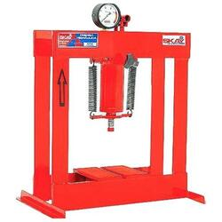
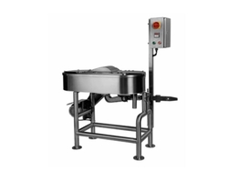
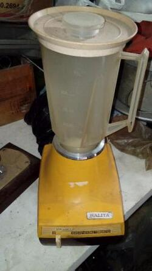
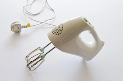
Caso opte por fazer o molde, certifique-se de lixar e envernizar as madeiras por inteiro, com duas a três camadas de verniz. A tela de mosquiteiro deve ser recortada pouco maior que o tamanho do bastidor, grampeada sem que hajam ondulações na tela (para isso o auxílio de mais uma pessoa ou seguradores de metal seria o recomendado) e depois recortada a rebarba com excesso. Recomenda-se usar fios e grampos não oxidantes para que o produto dure por anos, mas o mais importante é cobrir os grampos nas margens do bastidor com silver tape ou alguma fita isolante para que esta região não entre em contato com a água.
Por fim o marco será do mesmo tamanho da forma, mas sem a necessidade de tela. No lugar é possível confeccionar um limitador que dará desenho á folha caso queiramos, por exemplo, fazer um papel de carta ou cartão. Do mesmo jeito que o tamanho do molde definirá o tamanho da folha.
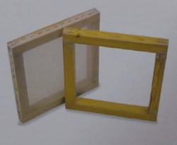
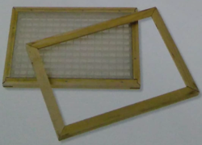
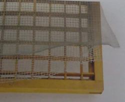
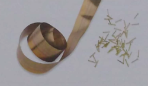
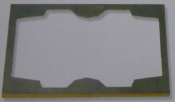
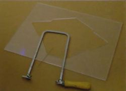
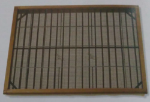
Adequadamente os feltros são a melhor opção por serem resistentes e duráveis, mas também podem ser caros e neste caso os panos de pia de cozinha funcionam muito bem apesar de durarem menos. Normalmente os mais baratos são os melhores para essa função e seu contraponto é serem mais moles, dificultando a locomoção com milhas grandes.
Para sua lavagem se utiliza detergente e caso necessário cloro para branqueamento, e apesar de se manterem de molho durante boa parte da oficina, devem ser desumidificados e deixados para secar. Outro cuidado muito importante é assegurar que não se desfiem, pois se tornam inúteis quando isso ocorre.


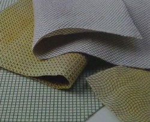
Nas imagens acima é possível visualizar feltros, carpetes e panos de cozinha que podem ser utilizados como buréis. A limpeza desse material deve ser realizada com escovas de cerdas, nylon ou tecido, nunca as de metais e. Os feltros ou panos devem estar ensopados em tinas a parte e serem retirados um por vez quando forem utilizados.
As tinas são grandes caixas plásticas (normalmente com tampa) onde serão mergulhados os buréis e, por muitas vezes, armazenadas as fibras e pastas refinadas (na ausência de um bidão ou balde) além de ser o recipiente de homogeneização da cola e local final onde serão coletadas as fibras com os moldes. Apesar de não ser necessário, as tinas podem ter um sistema de escoamento e até mesmo rodas para facilitar no transporte caso decidirmos por trabalhar com grandes quantidades de materiais na oficina.
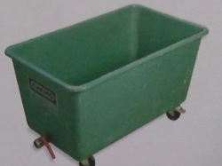

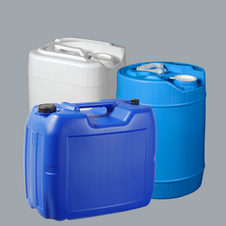
Trituradoras (domésticas, de jardinagem, etc), tesouras, colas sintéticas (como de carpinteiro, papelaria, de encadernação, látex, de celulose, etc), baldes para armazenamento, silk screens (caso os baldes não tenham tampa, ela serve como excelente protetor para armazenamento), peneiras, pregadores, pistola de grampos, martelo e pregos, luvas, botas de borracha, aventais, corantes hidrossolúveis, medidor de pH, entre outros itens de suma utilidade.
Esta é uma foto retirada do livro base para a oficina que representa um ambiente projetado especificamente para a produção da mesma, com disposição de material e áreas de escoamento e de trabalho bem definidas.
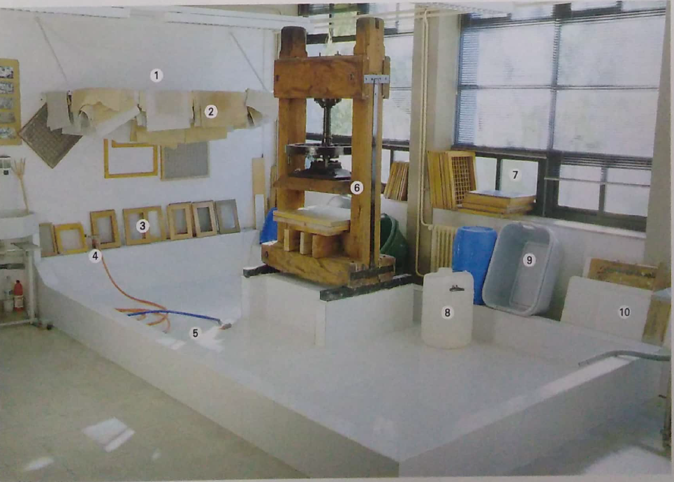